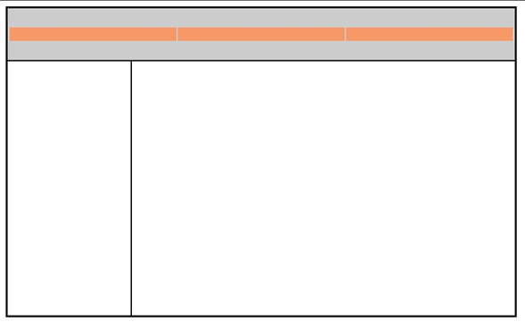

Practica No #3
El papel del archivo de reset CSS
Antes de empezar a crear un diseño visual de página Web vamos a ver cómo se utiliza un archivo de reset de CSS. Todos los elementos HTML se muestran en pantalla utilizando los estilos por defecto que aplica cada navegador. Ya hemos visto en el capítulo precedente cómo CSS nos permite definir estilos para tipos de letra, modificando el tamaño y la fuente, pero hay otros estilos no tan obvios.
Todos los elementos HTML incluyen márgenes por defecto. Aunque los navegadores web actuales tienen una calidad muy superior a los antiguos, conviene saber que cada motores de restitución empleado por los navegadores aplica sus propias reglas para mostrar los elementos en pantalla.
Una técnica para homogeneizar las presentaciones en pantalla consiste en utilizar un archivo CSS de reset que elimine los estilos por defecto aplicados a los elementos HTML utilizados con más frecuencia.
1 En el editor de textos, en Archivo selecciona Abrir. Abre en la carpeta HTML5_03lessons el archivo 03_reset.html.
Este archivo contiene una serie de elementos HTML genéricos, como títulos, párrafos, listas y formularios. No incluye estilos CSS.
2 Muestra en el navegador la página y mira el espacio de separación que hay entre los títulos, y fíjate también en el aspecto de las listas de datos y el formulario. Lo que haremos ahora es asociar una hoja de estilo CSS de reset para ver cómo afecta a la presentación en pantalla de estos elementos. Cierra el navegador y vuelve al editor.
3 Añade la siguiente línea de código (destacada en color rojo) debajo de la etiqueta de título para asociar la hoja de estilos reset.css que se encuentra también en la carpeta HTML5_03lessons:
4 Selecciona Archivo-Abrir. En la ventana, selecciona el archivo reset.css y pulsa Abrir. Revisa un momento el contenido.
Esta serie de reglas elimina los valores por defecto de márgenes, márgenes interiores (“padding”), y los bordes de casi todos los elementos HTML.
5 Ahora vamos a modificar la hoja de estilos, pero tenemos que asociarla a las páginas web. Recuerda que las hojas de estilos de reset son opcionales. Nos ayudan a normalizar la presentación en los distintos navegadores, y algunos diseñadores también incluyen en ellas sus propios estilos de uso frecuente para resetear los valores iniciales de los elementos.
Breve historia de las técnicas de presentación en pantalla para la Web
Aunque aquí vas a aprender a crear un diseño visual de página utilizando estilos CSS, debes saber que esto no ha sido siempre la técnica normal. Cuando se empezó con el diseño web a mediados de los 90, el único método que se podía emplear para crear estructuras visuales complejas, como por ejemplo la presentación en varias columnas, consistía en emplear el elemento tabla (<table>). La tabla HTML estaba pensada inicialmente para mostrar datos de manera estructurada, en filas, columnas y celdas. Sin embargo los diseñadores empezaron a utilizar este elemento como base para las estructuras visuales de las páginas. En aquel momento esa técnica estaba plenamente justificada: las tablas era lo único que tenían para generar el tipo de diseños que se necesitaban y, además, eran un recurso extremadamente flexible.
A partir de aquí, empezaron a utilizarse técnicas como el anidamiento de tablas, es decir, crear tablas dentro de celdas de otras tablas de mayor tamaño. Por ejemplo, el código para una página normal de dos columnas podía empezar creando una tabla de tres filas y dos columnas:

Una tabla web de tres filas y dos columnas.
Puesto que la primera fila se iba a convertir en la sección de cabedera, no interesaría que quedase dividida en dos columnas. La etiqueta HTML <colspan> permite fusionar las dos celdas:

Una tabla cuya primera fila consta de dos celdas fusionadas en una sola.
En esta primera fila el diseñador, por ejemplo, podía intentar insertar una sección independiente de tres columnas, para mostrar un logo y otros elementos, como una barra de navegación o un campo para pedir credenciales de usuario. Para añadir esta sección, el diseñador tenía que crear una nueva tabla (esta vez con una fila de tres columnas) dentro de la primera fila de la tabla inicial:

Una nueva tabla, con una fila y tres columnas, anidada dentro de la primera fila de la tabla original.
Para generar esta estructura de tabla, el diseñador tenía que configurar la tabla inicial con una anchura y altura fijas. Supongamos que el diseñador también quisiera un borde negro fino para todos los elementos. La propiedad “border” de las tablas HTML es muy básica no nos permite añadir colores. Una solución frecuente consistía en insertar la tabla actual dentro de otra, que consistía simplemente en una única celda con el fondo en color negro. Al modificar el margen interior y el color de fondo, y fusionar otras celdas más, el diseñador podía así crear una estructura visual basada en tablas con un cierto estilo.

Introducción a las distintas opciones de presentación de páginas
Antes de la estructura visual de nuestras páginas web tenemos que decidir unas cuantas cosas. Lo primero es qué anchura va a tener. Hay dos categorías principales de estructuras en base a su anchura: las de anchura fija y las de ancho variable. En las estructuras de ancho fijo todos los elementos de la página se anidan dentro de un contenedor que tiene un ancho explícito (en este ejemplo utilizamos el valor de 960 pixels, pero se suele utilizar también la unidad de medida em).
El elemento <div>: creación de una estructura CSS de dos columnas con anchura fija
En esta práctica vamos a crear una estructura visual de anchura fija con dos columnas. Para empezar, vamos a trabajar con una página sencilla que ya hemos preparado para ti. Esta página emplea una serie de elementos <div> para generar su estructura de base. Podemos considerar al elemento <div> como un contenedor genérico en el que podemos poner elementos relacionados entre sí de forma lógica. La apertura y cierre de etiquetas <div> suele hacerse rodeando a otros elementos de la página, de forma que dichos elementos quedan anidados dentro del contenedor. Puedes tener en la misma página todos los elementos <div> que consideres necesarios y con frecuencia se utilizan para crear el armazón visual. Un elemento <div> suele llevar un atributo ID (con lo que adquiere un “nombre” explícito dentro de la página) o bien pertenecer a una clase CSS, utilizándose ambos como medio para aplicar al contenedor uno o más estilos CSS. El empleo de elementos <div> facilita a otras personas la identificación de las diversas secciones en que se subdivide la página y también nos ayuda a controlar y aplicar estilos en cada una de ellas.
En esta práctica vamos a utilizar el elemento div con identificadores ID de CSS.
La propiedad float en CSS hace posible que un texto pueda escribirse alrededor de una imagen. Este estilo ha sido tomado del diseño de imprenta, donde a este efecto se le llama “justificación” del texto. CSS consigue el mismo efecto haciendo que los elementos que siguen a un elemento “flotante” puedan rodearlo, cambiando su posición relativa con respecto a él. Este comportamiento también nos sirve para crear columnas en una página.
Si queremos tener múltiples elementos flotantes dentro del mismo contenedor, el resultado es que se alinean entre sí. Este comportamiento se suele utilizar en ciertas funciones habituales de las páginas web, como por ejemplo los menús horizontales o las galerías de imágenes.
Es fundamental conocer cómo interactúan múltiples elementos flotantes unos con otros a fin de utilizarlos correctamente. Veamos este ejemplo: son seis imágenes dentro de un div de 360 pixels de ancho. Cada imagen tiene una anchura de 50 pixels y hay 10 pixels de margen (5 a la derecha y otros 5 a la izquierda). Al sumar los valores podemos ver que 6 × 50 son 300 pixels par a las imágenes, y 6 × 10 suman 60 pixels de margen. Por tanto, las imágenes junto con sus márgenes nos caben dentro del div, que tiene una anchura total de 360 pixels.
Creación de columnas con la propiedad float
1 Añade el siguiente selector y las reglas de estilo debajo de la regla #mainnav:
#sidebar {
float:right;
width:300px;
background-color:#CCC;
}
Guarda la página y muéstrala en el navegador. La página aparece “rota”. Ahora vas a ver qué es lo que causa que la página salga “rota” como en este caso, ya que este efecto enseña cómo funciona la propiedad float.
Aunque la página parece rota, los divs están realmente funcionando tal y como debe ser: cuando convertimos en flotante un elemento (en este caso el div sidebar), queda eliminado del flujo normal del HTML. Es por eso que la barra lateral se extiende por todo el contenedor.
La barra lateral queda flotando, pero se superpone sobre los límites de otros elementos de la página.
Ahora vamos a declarar como flotante al otro div, hacia el lado izquierdo, y vamos a ver cómo afecta eso a nuestra página. Vuelve al editor.
2 Añade este selector y las reglas de estilo debajo de la regla #sidebar:
#main {
width:600px;
float:left;
background-color:#ADA446;
}
3 Guarda el archivo y vuelve a mostrar la página en el navegador.
El div “main” flota hacia la izquierda, pero el “footer” sube a la parte superior siguiendo el curso o “flujo” de restitución de la página.
Al hacer flotar este div hacia la izquierda hemos resuelto el problema de que parte de su contenido apareciera debajo de sidebar; a pesar de que por la cantidad de contenido que tiene el div main parte de él se sale del propio contenedor. También vemos que tenemos otro problema con el elemento footer: debería aparecer en la parte inferior de la página, pero no es así.
Para obligar al div footer a ponerse en la parte inferior de la página le vamos a asignar una nueva propiedad llamada clear.
Cuando añadimos la propiedad CSS clear a un objeto, le estamos indicando una regla que dice “no admito elementos flotantes a mi lado”. Podemos especificar si queremos que no haya elementos flotantes a la izquierda, a la derecha o en ambos lados. En el caso del pie de página, queremos eliminarlos de ambos lados.
1 Añade este nuevo selector y sus reglas debajo de las reglas de #main:
#footer {
clear:left;
background-color:#BA2B22;
}
2 Guarda el archivo y visualízalo en el navegador.
Ahora el pie de página queda en la parte inferior del div main. Lo que hace la regla clear:left es impedir la presencia de elementos flotantes a su izquierda. El div main es flotante, por lo que el pie se mueve a la siguiente posición disponible. Cierra el navegador y vuelve al editor.
El problema es que el div “sidebar” siguen superpuesto al pie y aunque podemos cambiar la regla a clear:right y con ello lo evitaríamos, una forma más segura de resolver esta situación es asegurarnos de que no se van a colocar objetos flotantes ni a su derecha ni a su izquierda.
3 Cambia el valor de la propiedad clear así:
clear:both;
De esta forma nos aseguramos de que no habrá elementos flotantes en ambos lados del pie de página.
4 Guarda el archivo y vuelve a mostrarlo en el navegador.
Verás que no cambia con respecto al paso 3 pero el pie de página ahora está mejor preparado para cambios futuros en el contenido.
Creación de un menú de navegación basado en listas con “float”
Ahora que has aprendido los conceptos básicos de “float” y “clear”, volvamos a la sección de la barra de navegación y vamos a añadir un menú sencillo basado en una lista no ordenada (es decir, que sus líneas no llevan numeración, sino viñetas o signos). Los elementos de la lista dentro de este menú tendrán que ser flotantes para modificar la presentación vertical por defecto de las listas. Los menús de navegación CSS se utilizan mucho en el diseño basado en estándares porque se pueden actualizar y modificar de manera mu sencilla, y porque se basan en textos (y no en imágenes), lo que mejora la accesibilidad en dispositivos como los lectores de pantalla, e incluso ayudan a mejorar el posicionamiento de nuestras páginas en los buscadores.
Antes de seguir con nuestra estructura visual vamos a importar algunos estilos de texto basados en los que hemos creado en la Lección 2. Hasta aquí hemos añadido los estilos dentro de una hoja de estilos interna en vez de hacerlo sobre una externa. Cuando estamos diseñando la estructura de las páginas, el empleo de hojas de estilo internas es una cuestión de comodidad: resulta más sencillo para crear y modificar reglas si las tenemos dentro de la página y podemos llegar a ellas desplazando la ventana que si las tenemos en un archivo externo. De momento vamos a asociar una hoja de estilos externa que añade reglas de base para elementos como títulos, listas y párrafos.
Efecto de los márgenes internos y externos en una estructura de anchura fija
En esta sección vamos a separar las secciones de texto de nuestra página (que en este momento tienen márgenes de cero pixels, por efecto de la hoja de estilos de reset). Vamos a ver ahora algunas estrategias para controlar la estructura visual de la página. El objetivo de esta práctica no consiste en mostrar un método único de organización con CSS, sino en conocer las diferentes opciones posibles, lo que te ayudará en futuros proyectos a la hora de decidir qué método es el más adecuado en cada caso.
Repaso al uso de márgenes internos y externos.
En esta lección hemos visto dos métodos para separar los elementos dentro de una página. El primero consiste en añadir margen interno (padding) al elemento div contenedor. En este caso la ventaja es que todos los elementos dentro de este div se ven afectados al mismo tiempo, es una solución rápida y eficiente. Su desventaja es que aumenta la anchura total del propio contenedor. Para compensar esta expansión, tenemos que dejar algo de espacio adicional a los lados. Este comportamiento puede generar cierta confusión y provocar que las páginas se restituyan incorrectamente si no tenemos cuidado.
El segundo método consiste en añadir márgenes externos a los elementos que están dentro del propio div. Su desventaja es que necesitamos más código y hay que prestar atención a los detalles, tenemos que ir viendo cómo se posicionan los elementos individualmente. Su ventaja es que el posicionamiento de la columna es más predecible, puesto que solo tenemos que tener en cuenta una anchura total.
Finalmente, conviene destacar que lo habitual es aplicar una combinación de ambos métodos en cualquier estructura de presentación. Por tanto, debes conocer bien el comportamiento y los efectos de cada uno de ellos.
Aplicar una imagen de fondo al pie de página
Hasta ahora nuestra estructura de página muestra los colores de fondo que hemos declarado a los elementos div. En esta práctica vas a aprender a insertar imágenes. Para ello empezaremos por añadir una imagen de fondo al pie de página mediante CSS.
1 Localiza el div #footer y sustituye todo el contenido de texto que hay dentro por este que aparece aquí:
<div id="footer">
<p>Copyright Worldwide Apparel 2011 </p>
<p>All content on this site is confidential and should not be shared with anyone outside of Worldwide Apparel.<p>
</div>
2 Guarda la página y ábrela en el navegador.
A cada uno de los párrafos se le aplican las reglas de párrafo descritas en la hoja de estilos. Ahora vamos a añadirle una imagen de fondo a todo el contenedor div. Es una imagen de 960 pixels de ancho y 128 de alto.
3 En la hoja de estilos interna, encuentra la regla para el pie de página (“#footer”). Añade una nueva regla para aplicar una imagen de fondo indicando un archivo de la carpeta de imágenes de tu equipo:
#footer {
clear:both;
background-color:#BA2B22;
background-image:url(images/footer_background.jpg);
background-repeat:no-repeat;
}
4 Modifica la regla para el pie de página añadiendo las líneas en rojo:
#footer {
clear:both;
background-color:#BA2B22;
background-image:url(images/footer_background.jpg);
background-repeat:no-repeat;
width:960px;
height:128px;
}
Guarda el archivo y vuelve a mostrar la página en el navegador. Ahora el tamaño de la zona de pie de página coincide con el tamaño de la foto. El paso siguiente consiste en ajustar los estilos del texto que va dentro, separándolos.
5 En el editor de texto, encuentra la regla #footer y justo debajo añade esta otra regla para párrafos, que se aplicará únicamente a los párrafos del footer:
#footer p {
margin:10px 0px 0px 20px;
width:280px;
font-family:Verdana, Geneva, sans-serif;
font-size:0.689em;
}
Esta regla añade un margen superior de 10 pixels y margen izquierdo de 20 pixels a ambos párrafos del pie. Al definir la anchura de los párrafos podemos forzar un salto de línea en el punto aproximado que nos interesa: dentro del espacio en blanco que nos deja la foto. Las propiedades “font-family” y “font-size” nos ayudarán a conseguir un efecto más atractivo con un tipo de letra más pequeño.
6 Guarda la página y visualízala en el navegador.
En la sección anterior hemos visto cómo se utilizan los márgenes internos y externos, es una técnica muy habitual. Podríamos haber añadido algo más de espacio entre el primer párrafo y el borde superior del pie de página, pero al aumentar el margen superior en la regla #footer p estamos añadiendo espacio también al segundo párrafo. En este caso, lo conveniente es añadir margen interior al div “footer” tal y como se indica en el paso siguiente.
7 Añade la declaración que aparece en rojo a la regla #footer:
#footer {
clear:both;
background-color:#BA2B22;
background-image:url(images/footer_background.jpg);
background-repeat:no-repeat;
width:960px;
height:128px;
padding-top:10px;
}
Ajuste fino de la estructura visual de la página
Podemos aplicar colores de fondo y/o bordes a los elementos principales de nuestra estructura en las primeras fases del diseño, lo que nos ayudará a ver mejor sus límites. Después, si no queremos conservarlos, podemos eliminarlos y la estructura seguirá funcionando sin problemas. Ahora vamos a eliminar los colores de fondo de los divs del centro de la página, añadiremos algunas imágenes de fondo y mejoraremos algo el estilo de nuestra barra de navegación.
1. Elimina toda la propiedad background-color en las siguientes 4 reglas de estilo: #wrap, #sidebar, #main y #footer. Guarda el archivo y visualízalo en el navegador.
2. Aunque nos vamos aproximando a un diseño de página unificado, aún tenemos que hacer unas cuantas cosas más. Vamos a empezar por poner un fondo de gradiente de color a la barra lateral. La mejor forma de hacerlo es mediante la inserción de una imagen de fondo. Como hicimos en la práctica anterior con el pie de página, ahora estamos añadiendo una imagen de fondo desde CSS a este elemento div. pero en este caso el valor de background-repeat ahora es “repeat-x”. Esto provoca que la imagen se repita en sentido horizontal (el eje X).
3. Añade también esta otra declaración para aplicarla al borde Izquierdo de la barra. Nos va a ayudar a delimitar mejor la separación con respecto al contenido del área principal (“main”).
4. Otro problema de nuestra estructura es el logo dentro de la cabecera. En este momento está anidado y se presenta en pantalla pegado al borde del contenedor. Podemos separarlo un poco creando una regla específica para imágenes dentro del div “masthead”. Encuentra la regla #masthead y añádele esta línea justo debajo.
Se trata de un selector contextual igual que otros que hemos ido añadiendo a los títulos y párrafos dentro de las columnas “main” y “sidebar”. En este caso, se trata de una declaración para añadirle margen por la izquierda a todas las imágenes que puedan aparecer en el div “masthead”.
Lo último que nos quedaría por hacer es mejorar la apariencia de la barra de navegación. En este momento estamos empleando unos estilos muy rudimentarios. Ahora los vamos a mejorar para ponerla a la altura del resto de nuestra página y además le vamos a añadir algo de interactividad.
5. Para mejorar la presencia visual de los enlaces dentro de la sección “mainnav” vamos a añadir una regla explícita para los enlaces. Encuentra la regla #mainnav li y añade la siguiente regla justo debajo de ella:
La declaración text-decoration elimina el subrayado del vínculo y le cambia el color a blanco. La declaración display:block hace que estos elementos de navegación llenen por complete todo el espacio de la barra de navegación.
6. Cuando el usuario pasa el cursor por encima de los enlaces, sería interesante que cambiasen su apariencia, así sabe que se trata de vínculos y no de texto normal. Para ello podemos aprovechar una particularidad de los estilos que solo tienen los vínculos. Justo debajo de la regla #mainnav ul li a , añade esta otra:
Los enlaces poseen una categoría exclusiva llamada pseudoclases. Hay cuatro estilos asociados a los vínculos, que son a:link, a:visited, a:hover y a:active. No es obligatorio aplicar estilos a los cuatro, por ejemplo aquí hemos creado estilos para a: hover que modifican el aspecto de todos los enlaces de la barra de navegación cuando tienen encima el cursor. La pseudoclase a:visited se aplica al vinculo después de que el usuario ha pulsado sobre él, y la pseudoclase a:active modifica su aspecto cuando le estamos pulsando con el botón.
7. Guarda el archivo y muéstralo en el navegador. Pasa el cursor por encima de los enlaces para ver los cambios. Es el resultado del estilo a:hover.
¿Qué es un CSS? R- El CSS (hojas de estilo en cascada) es un lenguaje que define la apariencia de un documento escrito en un lenguaje de marcado. Así, a los elementos de la página web creados con HTML se les dará la apariencia que se desee utilizando CSS: colores, espacios entre elementos, tipos de letra, separando de esta forma la estructura de la presentación.
¿Para que sirve un CSS? R- Sirve para poder darle un diseño atractivo, novedoso, peculiar, o lo que se quiera a un lenguaje de marcado como HTML haciendo que pase de ser una simple hoja en blanco a un diseño colorido y más atractivo.
¿Cuál es la diferencia que sería más difícil de realizar en un sitio web si se optara por no usar un CSS? R- La diferencia radica en el diseño y la forma del archivo de lenguaje de marcado ya que sin CSS será más difícil darle un diseño más dinámico y atractivo a la vista.